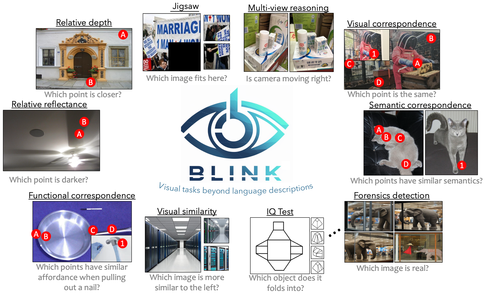

üìë Selected Research Projects
-

Latent Visual Reasoning
Bangzheng Li, Ximeng Sun , Jiang Liu, Ze Wang, Jialian Wu, Xiaodong Yu, Hao Chen, Emad Barsoum, Muhao Chen, Zicheng Liu
preprint, 2025
QLIP: A Dynamic Quadtree Vision Prior Enhances MLLM Performance Without Retraining
Kyle R. Chickering, Bangzheng Li, Muhao Chen
preprint, 2025
BLINK: Multimodal Large Language Models Can See but Not Perceive
Xingyu Fu*, Yushi Hu*, Bangzheng Li, Yu Feng, Haoyu Wang, Xudong Lin, Dan Roth, Noah A. Smith, Wei-Chiu Ma†, Ranjay Krishna†
ECCV 2024, Spotlight of cVinW@CVPR 2024, 36K total downloads.
[paper] [website] [code] [dataset] [eval] [twitter] [
 Paper of the day]
Paper of the day]
Semantic-Clipping: Efficient Vision-Language Modeling with Semantic-Guidedd Visual Selection
Bangzheng Li, Fei Wang, Ben Zhou, Nan Xu, Sheng Zhang, Hoifung Poon, Muhao Chen
preprint, 2024
Deceptive Semantic Shortcuts on Reasoning Chains: How Far Can Models Go without Hallucination?
Bangzheng Li, Ben Zhou, Fei Wang, Xingyu Fu, Dan Roth, Muhao Chen
NAACL. 2024.
Ultra-fine Entity Typing with Indirect Supervision from Natural Language Inference
Bangzheng Li,Wenpeng Yin, Muhao Chen
TACL. 2022.

FAMICOM: Further Demystifying Prompts for Language Models with Task-Agnostic Performance Estimation
Bangzheng Li, Bangzheng Li, Ben Zhou, Xingyu Fu, Fei Wang, Dan Roth, Muhao Chen
Arxiv 2024 June
Affective and Dynamic Beam Search for Story Generation
Tenghao Huang, Ehsan Qasemi, Bangzheng Li, He Wang, Faeze Brahman, Muhao Chen, Snigdha Chaturvedi
EMNLP. 2023.
Unified semantic typing with meaningful label inference
James Y. Huang, Bangzheng Li, Jiashu Xu, Muhao Chen
NAACL. 2022.
Does Your Model Classify Entities Reasonably? Diagnosing and Mitigating Spurious Correlations in Entity Typing
Nan Xu, Fei Wang, Bangzheng Li, Mingtao Dong, Muhao Chen
EMNLP. 2022.

COVID-19 Literature Knowledge Graph Construction and Drug Repurposing Report Generation
Qingyun Wang, Manling Li, Xuan Wang, Nikolaus Parulian, Guangxing Han, Jiawei Ma, Jingxuan Tu, Ying Lin, Ranran Haoran Zhang, Weili Liu, Aabhas Chauhan, Yingjun Guan, Bangzheng Li, Ruisong Li, Xiangchen Song, Yi Fung, Heng Ji, Jiawei Han, Shih-Fu Chang, James Pustejovsky, Jasmine Rah, David Liem, Ahmed ELsayed, Martha Palmer, Clare Voss, Cynthia Schneider, Boyan Onyshkevych
NAACL. 2021, Best Demo Paper
Neural Concept Map Generation for Effective Document Classification with Interpretable Structured Summarization
Carl Yang, Jieyu Zhang, Haonan Wang, Bangzheng Li, Jiawei Han
SIGIR. 2020.
Comprehensive Named Entity Recognition on CORD-19 with Distant or Weak Supervision
Xuan Wang, Xiangchen Song, Bangzheng Li, Yingjun Guan, Jiawei Han
ISMB. 2020.

Fine-Grained Named Entity Recognized Dataset of COVID-19 Literature
Xuan Wang, Xiangchen Song, Bangzheng Li, Kang Zhou, Qi Li, Jiawei Han
BIBM. 2020.